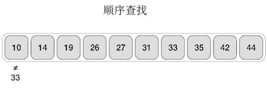

顺序查找算法
顺序查找算法又称顺序搜索算法或者线性搜索算法，是所有查找算法中最基本、最简单的，对应的时间复杂度为
顺序查找算法适用于绝大多数场景，既可以在有序序列中查找目标元素，也可以在无序序列中查找目标元素。
举个简单的例子，采用顺序查找算法在 {10,14,19,26,27,31,33,35,42,44} 序列中查找 33，整个查找过程如下图所示：
结合图 1，顺序查找算法会遍历整个待查找序列，序列中的每个元素都会和目标元素进行比对，直至找到 33。如果遍历完整个序列仍没有找到与 33 相等的元素，表明序列中不包含目标元素，查找失败。
如下用伪代码给大家展示了顺序查找算法的实现思路：
某些场景中，待查找序列可能包含多个目标元素，需要我们全部找到。这种情况下，顺序查找算法仍然适用，只需对实现过程做一下微调即可，对应的伪代码如下：
如下是使用顺序查找算法在 {10,14,19,26,27,31,33,35,42,44} 中查找 33 的 Java 程序：
如下是使用顺序查找算法在 {10,14,19,26,27,31,33,35,42,44} 中查找 33 的 Python 程序：
以上程序的输出结果均为：
O(n)。顺序查找算法适用于绝大多数场景，既可以在有序序列中查找目标元素，也可以在无序序列中查找目标元素。
顺序查找算法的实现思路
所谓顺序查找，指的是从待查找序列中的第一个元素开始，查看各个元素是否为要找的目标元素。举个简单的例子，采用顺序查找算法在 {10,14,19,26,27,31,33,35,42,44} 序列中查找 33，整个查找过程如下图所示：

图 1 顺序查找 33 的过程
图 1 顺序查找 33 的过程
结合图 1，顺序查找算法会遍历整个待查找序列，序列中的每个元素都会和目标元素进行比对，直至找到 33。如果遍历完整个序列仍没有找到与 33 相等的元素，表明序列中不包含目标元素，查找失败。
如下用伪代码给大家展示了顺序查找算法的实现思路：
arr[1...N] // 待查找序列
linear_search(arr , value): // value 表示要查找的目标元素
for i <-1 to length(arr): // 从 arr 序列中第一个元素开始遍历，直至最后一个元素
if arr[i] == value: // 如果成功找到一个元素和目标元素匹配，则返回该元素所处的位置
return i
return -1 // 返回 -1，表示查找失败。
某些场景中，待查找序列可能包含多个目标元素，需要我们全部找到。这种情况下，顺序查找算法仍然适用，只需对实现过程做一下微调即可，对应的伪代码如下：
arr[1...N] //待查找序列
index[1...N] //存储目标元素的位置
j <- 1
linear_search(arr , value): // value 表示要查找的目标元素
for i <-1 to length(arr): // 从 arr 序列中第一个元素开始遍历，直至最后一个元素
if arr[i] == value: // 如果成功找到一个元素和目标元素匹配，则返回该元素所处的位置
index[j] <- i // 将目标元素所在序列的位置存储到 index 中
j <- j + 1 // j 自加，为下次在 index 中存储目标元素的位置做准备
return index
顺序查找算法的具体实现
结合伪代码，如下是使用顺序查找算法在 {10,14,19,26,27,31,33,35,42,44} 中查找 33 的 C 语言程序：
#include <stdio.h>
#define N 10 //待查找序列的元素个数
//实现顺序查找，arr[N] 为待查找序列，value 为要查找的目标元素
int linear_search(int arr[N], int value) {
int i;
//从第 1 个元素开始遍历
for (i = 0; i < N; i++) {
//匹配成功，返回元素所处的位置下标
if (arr[i] == value) {
return i;
}
}
//匹配失败，返回 -1
return -1;
}
int main()
{
int arr[N] = { 10,14,19,26,27,31,33,35,42,44 };
int add = linear_search(arr, 33);
if (add != -1) {
printf("查找成功，为序列中第 %d 个元素", add + 1);
}
else {
printf("查找失败");
}
return 0;
}
如下是使用顺序查找算法在 {10,14,19,26,27,31,33,35,42,44} 中查找 33 的 Java 程序：
public class Demo {
// 实现顺序查找，arr[N] 为待查找序列，value 为要查找的目标元素
public static int linear_search(int[] arr, int value) {
// 从第 1 个元素开始遍历
for (int i = 0; i < arr.length; i++) {
// 匹配成功，返回元素所处的位置下标
if (arr[i] == value) {
return i;
}
}
// 匹配失败，返回 -1
return -1;
}
public static void main(String[] args) {
int[] arr = new int[] { 10, 14, 19, 26, 27, 31, 33, 35, 42, 44 };
int add = linear_search(arr, 33);
if (add != -1) {
System.out.println("查找成功，为序列中第 " + (add + 1) + " 个元素");
} else {
System.out.println("查找失败");
}
}
}
如下是使用顺序查找算法在 {10,14,19,26,27,31,33,35,42,44} 中查找 33 的 Python 程序：
#待查找序列
arr = [10,14,19,26,27,31,33,35,42,44]
#实现顺序查找算法，value 为要查找的目标元素
def linear_search(value):
#遍历整个序列
for i in range(len(arr)):
if arr[i] == value:
return i
return -1
add = linear_search(33)
if add != -1:
print("查找成功，为序列中第 %d 个元素" % (add + 1))
else:
print("查找失败")
以上程序的输出结果均为：
查找成功，为序列中第 7 个元素
关注公众号「站长严长生」，在手机上阅读所有教程，随时随地都能学习。本公众号由C语言中文网站长亲自运营，长期更新，坚持原创。

微信扫码关注公众号